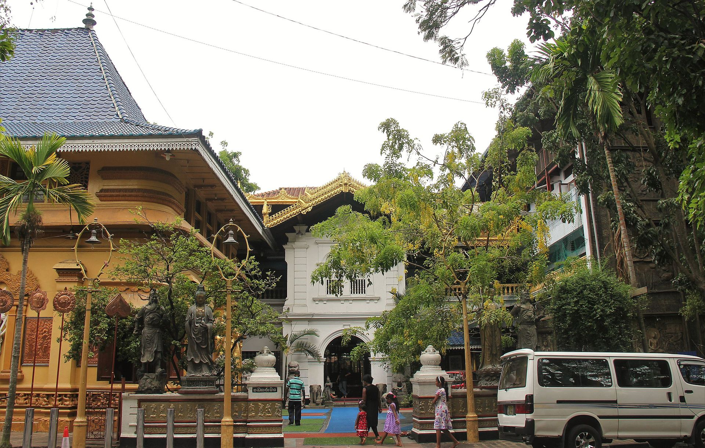

Galle Face Green

Galle Face Green is a 5 km (3.1 mi) long oceanfront urban park and esplanade, located in Colombo, Sri Lanka. The green is one of the most popular tourist attractions in Colombo.
Back to Heritage SitesGangaramaya Temple
Gangaramaya Temple is a prominent Buddhist temple in Colombo, Sri Lanka. It is one of the largest and most important temples in the country.
Back to Heritage SitesPettah Market

Pettah Market is a large and bustling market located in the heart of Colombo, Sri Lanka. It is a popular destination for both locals and tourists.
Back to Heritage SitesColombo National Museum

The Colombo National Museum is the largest museum in Sri Lanka. It houses a collection of artifacts that span over 2,000 years of Sri Lankan history.
Back to Heritage Sites